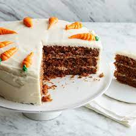

This carrot cake recipe with a homemade cream cheese frosting is my favorite, and I have tried many carrot cakes! It's moist, easy to make with grated carrots, and so delicious!

Prep Time: 30 mins
Cook Time: 40 mins
Additional Time: 10 mins
Total Time: 1 hrs 20 mins
Servings: 18
Yield: 1 (9x13-inch) carrot cake
Step 1
Beat the wet ingredients together, then mix in the dry ingredients. Stir in the carrots and fold in the pecans.
Step 2
Pour the batter into the prepared cake pan or pans. Bake in the preheated oven until a toothpick comes out clean.
Step 3
Beat the frosting ingredients together until smooth and creamy. Stir in the pecans. Frost the (completely cooled) cake.